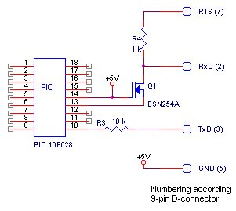
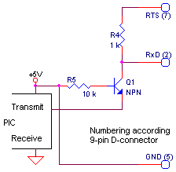

RS232, basic hardware
|
Contents |
Links |
- |
|
 My favorit, minimal components and it can compete with the well known Maxim devices. Tested upto 115_200 Baud. With a few more components, you can even derive the power supply for your PIC and electronics from the RS232: circuit on the right. |
|
of the serial port is contained in the EIA (Electronics Industry Association) RS232C standard.
It states many parameters such as -
1. A "Space" (logic 0) will be between +3 and +25 Volts.
2. A "Mark" (Logic 1) will be between -3 and -25 Volts.
3. The region between +3 and -3 volts is undefined.
4. The inputs are loaded to ground with a load of 3kOhm .. 7kOhm
More can be found on beyondlogic.
from ARC Electronics
(from beyondlogic)
|
D-Type-25 Pin No. |
D-Type-9 Pin No. |
Abbreviation |
Full name |
|
Pin 2 |
Pin 3 |
TD |
Transmit Data |
|
Pin 3 |
Pin 2 |
RD |
Receive Data |
|
Pin 4 |
Pin 7 |
RTS |
Request To Send |
|
Pin 5 |
Pin 8 |
CTS |
Clear To Send |
|
Pin 6 |
Pin 6 |
DSR |
Data Set Ready |
|
Pin 7 |
Pin 5 |
SG |
Signal Ground |
|
Pin 8 |
Pin 1 |
CD |
Carrier Detect |
|
Pin 20 |
Pin 4 |
DTR |
Data Terminal Ready |
|
Pin 22 |
Pin 9 |
RI |
Ring Indicator |
|
for Baudrates uptill 19200, R3 can be increased to 100 kOhm |
Equal to the circuit on the left, except the connection of the RS232 GND. |
|
|
for Baudrates uptill 19200, R4 can be increased to 10 kOhm. RTS should be set high by the PC. Instead of RTS, also DTR can be used. |
 The same as on the left but with a transistor (note the extra resistor R5). |
|
NOT WORKING Transmit circuits,
although some claim succes with one of these
|
The voltage on the RxD pin varies only from +5Volt to what ?? to nothing !! |
The voltage on the RxD pin varies only from 0 to +5Volt. |
|
|
|